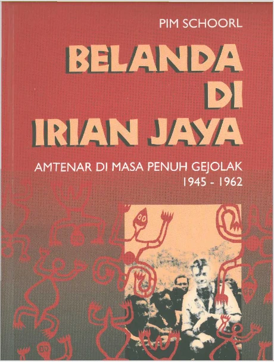
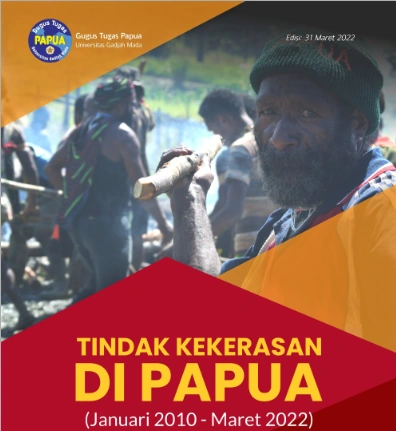

Karya klasik
Disunting oleh Pim Schoorl dan diterbitkan KITLV — rujukan lama yang tetap dicari peneliti sejarah Papua.
Menelusuri catatan sejarah dan antropologi Papua yang jarang terungkap. E-book ini merupakan karya legendaris yang disunting oleh Pim Schoorl dan diterbitkan oleh KITLV — menghadirkan potret Irian Jaya pada masa penuh gejolak menjelang berakhirnya kekuasaan kolonial Belanda.
Pembayaran otomatis via QRIS · akses e-book setelah transaksi terkonfirmasi

Tentang E-Book
“Menelusuri Catatan Sejarah dan Antropologi Papua yang Jarang Terungkap!”
E-book Belanda di Irian Jaya: Amtenar di Masa Penuh Gejolak 1945–1962 merupakan karya legendaris yang disunting oleh Pim Schoorl dan diterbitkan oleh KITLV. Edisi digital ini menyajikan kembali catatan tentang amtenar — para pejabat pemerintahan kolonial — di Irian Jaya pada periode yang penuh gejolak.
Seluruh judul, penyunting, penerbit, periode, dan harga pada halaman ini diambil langsung dari halaman checkout resmi produk di Toko Papua Online. Deskripsi resmi dari sana tampil terpotong pada 200 karakter, sehingga rangkuman di atas hanya memakai bagian yang benar-benar tersedia.
Disunting oleh Pim Schoorl dan diterbitkan KITLV — rujukan lama yang tetap dicari peneliti sejarah Papua.
Masa penuh gejolak: dari akhir Perang Pasifik hingga menjelang berakhirnya kekuasaan kolonial Belanda di Irian Jaya.
Menyoroti peran para pejabat pemerintahan (amtenar) dalam dinamika pemerintahan dan masyarakat setempat.
Dibaca di HP, tablet, maupun komputer — tanpa perlu menunggu pengiriman.
Yang Anda Dapatkan
Satu pembelian memberi Anda akses penuh ke edisi digital e-book ini.
File digital edisi lengkap, siap dibaca di semua perangkat.
Amtenar di Masa Penuh Gejolak 1945–1962, sesuai edisi yang dijual di checkout.
Diterbitkan oleh KITLV — lembaga riset sejarah dan antropologi terkemuka.
Rentang sejarah kunci Irian Jaya dalam satu e-book.
Cukup scan dan bayar — tanpa transfer manual, tanpa menunggu konfirmasi panjang.
E-book dapat diakses langsung setelah transaksi terkonfirmasi.
Detail Produk
Data berikut diambil apa adanya dari halaman checkout resmi produk.
Edisi Digital · Akses Penuh
Rp 50.000
Harga produk. Biaya transaksi QRIS Rp 2.850 ditambahkan di halaman checkout.
Pembayaran diproses otomatis melalui QRIS di halaman checkout Toko Papua Online. Cukup scan, bayar, dan akses e-book Anda setelah transaksi terkonfirmasi.
Anda akan diarahkan ke halaman checkout resmi Toko Papua Online.
Koleksi Lain
Selain catatan sejarah kolonial, kami juga menerbitkan laporan riset terkini tentang Papua.

348 kasus kekerasan (Januari 2010 – Maret 2022), profil aktor & korban, analisis motif, tabel sebaran per kabupaten, serta rekomendasi resmi GTP-UGM.
Lihat laporan iniBelanda di Irian Jaya 1945–1962
E-book PDF · Pim Schoorl · KITLV